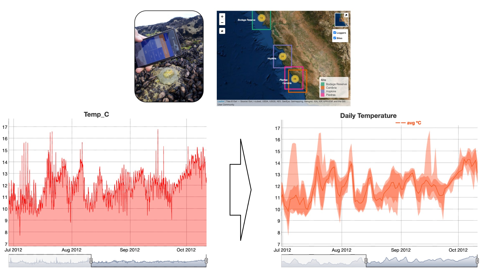

Methods for Data Science
Use the templates below to enter your survey data:
Check your list of species with WoRMS for taxonomy quality control:
Transform your survey data tables to Darwin Core Archive files (DwC-A):
Use these instructions to upload you data to the MBON Pole to Pole IPT:
Filter and analyze in situ temperature logger records deployed on rock shores
- Use this R script to filter and visualize high-frequency temperature logger records for your monitoring sites 
Fetch, analyze, and visualize satellite seascape data from selected polygons
- Use the seascapeR package to perform seascape analysis for
your monitoring regions

Create your biodiversity dashboard:
- R script to develop Biodiversity Dashboards for your monitoring
sites

OBIS extractions:
Extract satellite data:
- R script to extract sea
surface temperature (SST) and chlorophyll-a (CHL) from ERDDAP servers for selected locations, create time
series plots of SST and CHL
and their climatologies, and generate a map with the latest
satellite data.

Access the Marine-Coastal Information and Analysis System (SIMAR):
- Visit
SIMAR of CONABIO to visualize and analyze satellite
products for the Caribbean Sea, Gulf of Mexico and the Mexican and
Central America Pacific.

© 2018